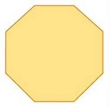
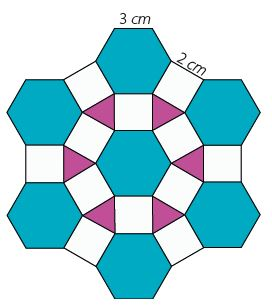
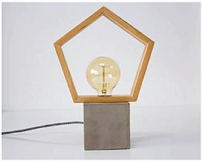
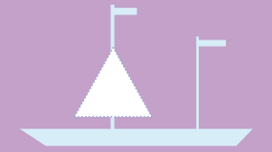
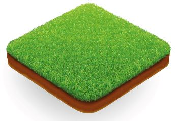
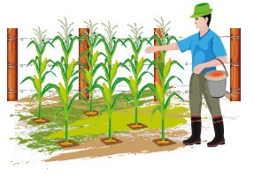
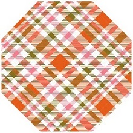
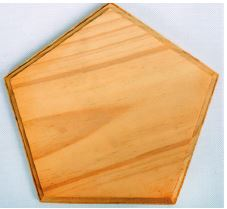
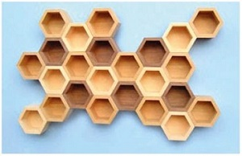

Aplico para aprender
Alumno:
Aplico para aprender
Alumno:

1. En los graderíos de una cancha se eliminan las barandas que delimitan las regiones cuadradas, como se observa en la figura. ¿Cuántos metros de barandas fueron eliminados?
R. Se eliminaron metros de barandas.
| cm | |||||||||||
cm |
cm |
||||||||||
| cm | |||||||||||
| cm | |||||||||||
cm |
cm |
||||||||||
| cm | |||||||||||
| cm | |||||||||||
cm |
cm |
||||||||||
| cm | |||||||||||
| cm | |||||||||||
cm |
cm |
||||||||||
| cm | |||||||||||
R. Se eliminaron metros de barandas.
2. Ernesto corta plataformas para colocarlas en una pared del patio para que su gato pueda jugar. Alrededor de cada una coloca una cinta metálica. Teniendo en cuenta que la medida de los lados es la misma para todas las figuras y es de centímetros, si corta con forma de triángulos equiláteros y con forma de heptágonos, ¿qué cantidad de cinta metálica necesita?
R. Ernesto necesita centimetros.
3. El patio de la escuela de Fátima tiene forma de un octógono regular.
Si tiene un perímetro de metros, ¿cuánto mide cada lado?
R. Cada lado del patio mide metros.
Si tiene un perímetro de metros, ¿cuánto mide cada lado?
R. Cada lado del patio mide metros.

4. Julio y Nancy realizan un diagrama como el que muestra la figura. Si colocan un cordón azul alrededor de los hexágonos, un cordón blanco alrededor de los cuadrados y un cordónmorado alrededor de los triángulos, ¿cuál es la longitud de los diferentes cordones?
R. Julio y Nancy necesitan centímetros de cordón azul, centímetros de color blanco y centímetros de cordón morado.
R. Julio y Nancy necesitan centímetros de cordón azul, centímetros de color blanco y centímetros de cordón morado.

5. Marco elabora lámparas con forma de pentágonos regulares. Si utilizó centímetros de tiras de madera y el lado de cada lámpara mide centímetros, ¿cuántas lámparas elaboró?
R. Marco elaboró lámparas.

6. Andrés desea decorar los bordes de la vela blanca de su bote. ¿Cuántos metros de cinta deberá comprar?
R. Andrés necesita metros de cinta para decorar la vela.
cm

7. Daniel necesita resolver el siguiente problema para su proyecto Historia de los grandes monumentos del mundo.
Los jardines del Taj Mahal están divididos en cuadrados iguales, de regiones cuadradas, y cada lado mide metros. Cuántos metros tiene en total la suma de los perímetros de todos los jardines?
Los jardines del Taj Mahal están divididos en cuadrados iguales, de regiones cuadradas, y cada lado mide metros. Cuántos metros tiene en total la suma de los perímetros de todos los jardines?
R. El perímetro total es de metros.
8. Para su proyecto de Ciencias Naturales, los niños de 5.° grado construyeron en el huerto de la escuela un semillero de forma cuadrada y colocaron ladrillos a su alrededor. Si cada lado mide metros, ¿qué extensión ocupan los ladrillos?
R. Los niños colocaron los ladrillos en metros alrededor del semillero.
R. Los niños colocaron los ladrillos en metros alrededor del semillero.

Reinaldo tiene una huerta de forma cuadrada. Para proteger las siembras, coloca una cerca de tres vueltas de alambre de púas. Mientras lo colocaba, una de las vueltas de alambre se rompió. Si cada lado de la huerta mide metros, ¿cuántos metros de alambre de púas colocó Reinaldo?
R. Reinaldo colocó metros de alambre de púas.

Anita elabora manteles individuales con forma de octógono regular, y coloca un encaje al filo de todos ellos. Si en total utilizó centímetros de encaje, ¿cuánto mide cada lado del individual?
R. Cada lado mide centímetros.

Elisa compra 20 bases para los maceteros de la escuela. Las bases tienen forma de pentágono regular con una medida de 17 centímetros de lado. Coloca un borde de un alambre de color al filo de cada base. Si compró un rollo de 2000 centímetros, ¿cuánto alambre le sobró? Exprésalo en metros.
R. A Elisa le sobraron metros de alambre.

Para su proyecto de Ciencias Naturales sobre las abejas, Jairo construye una maqueta como la de la figura. Cada lado de los hexágonos mide centímetros. Si pinta los bordes de todos los hexágonos, ¿cuántos centímetros pinta?.
R. Pinta centímetros.

Marcia elabora un cartel con diversos polígonos y sus perímetros para una presentación ante sus compañeros. Ayuda a Marcia a completar el cartel para su presentación. Relaciona cada figura con su perímetro.